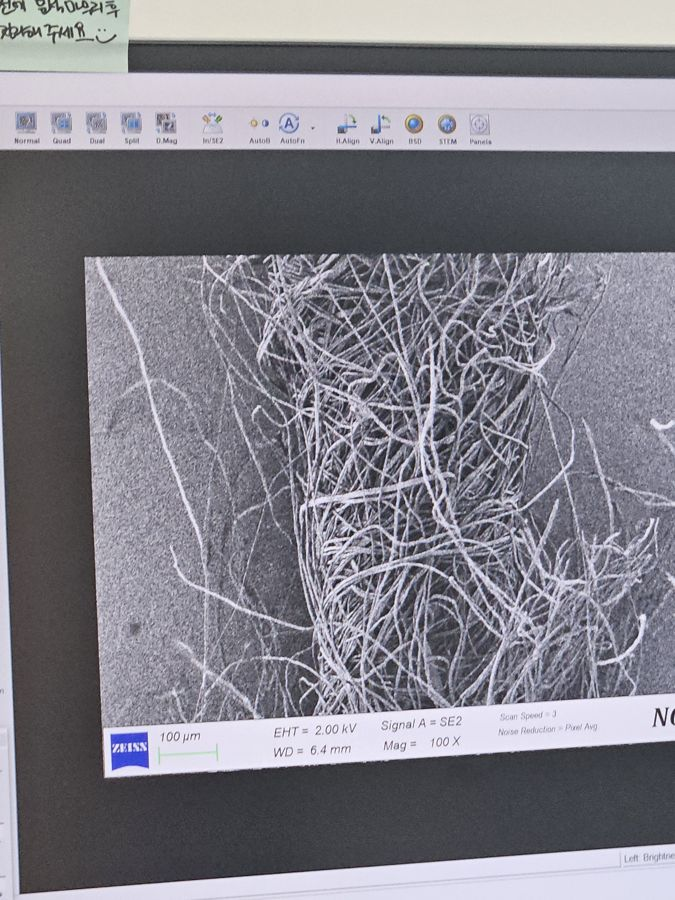
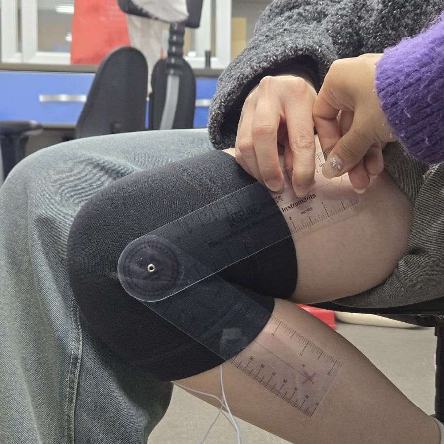
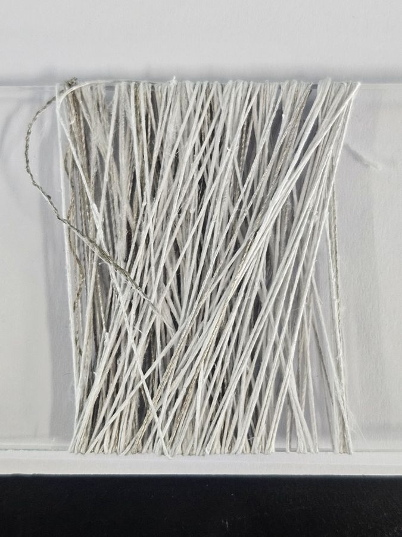
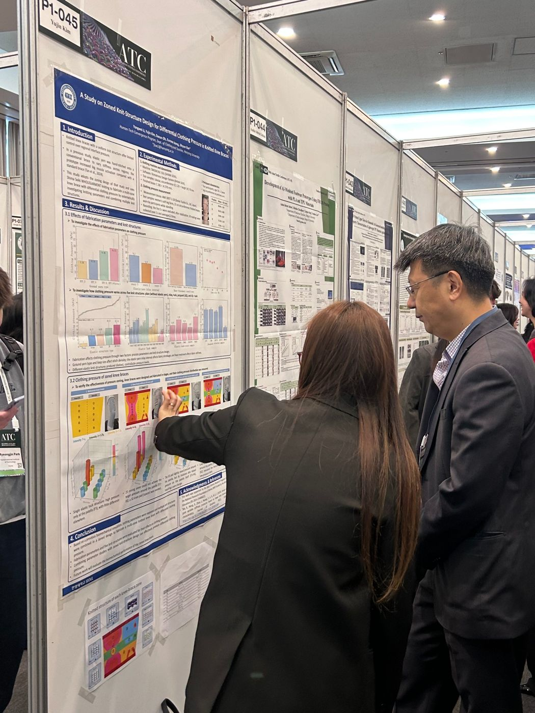
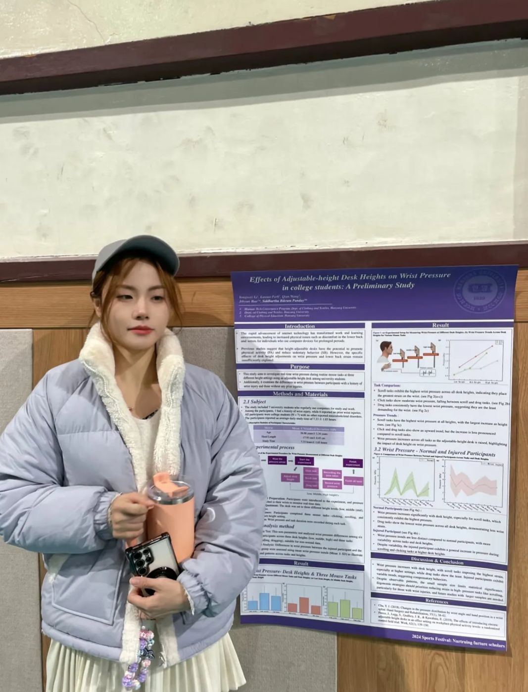
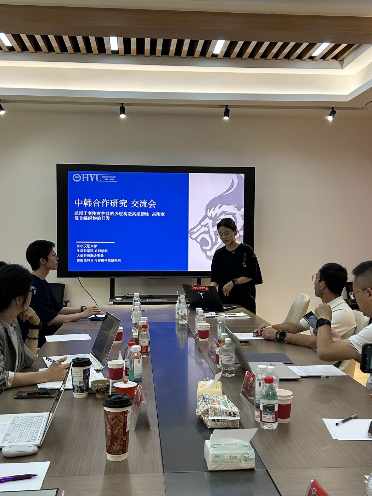
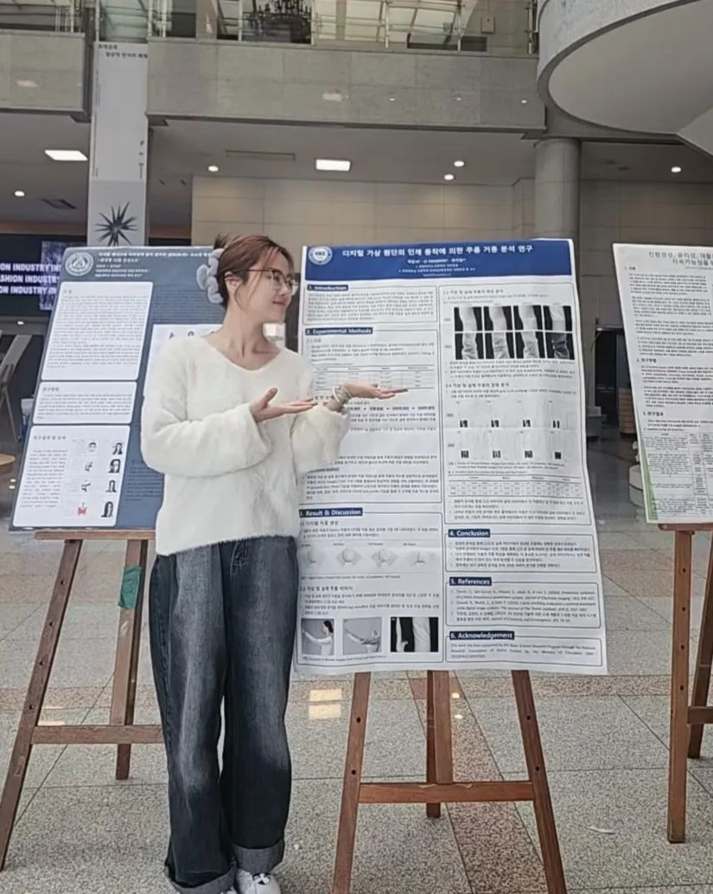
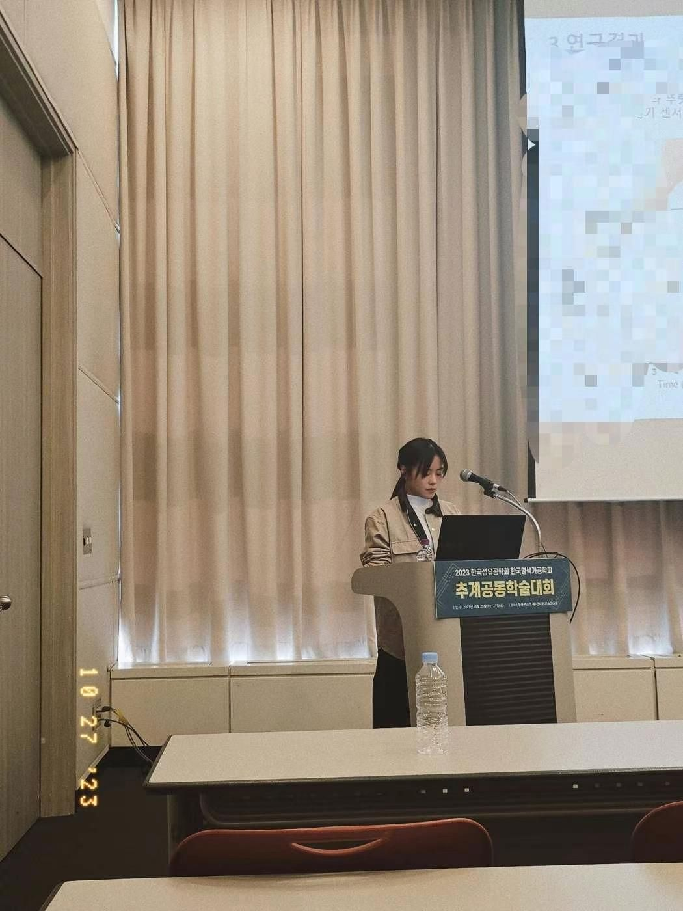
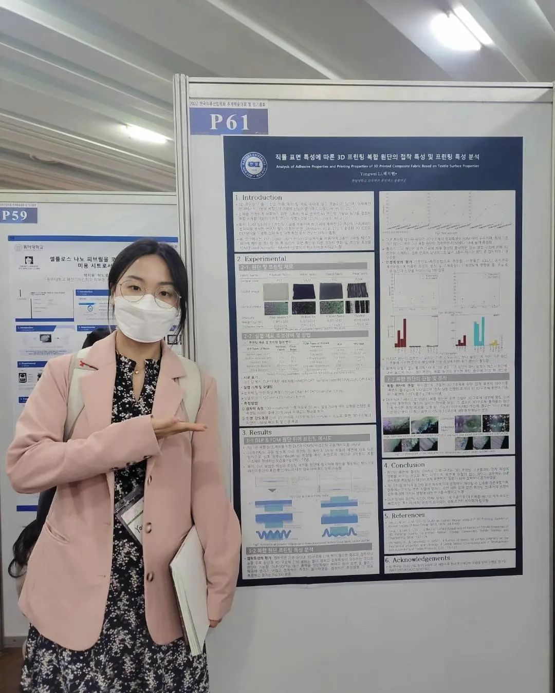

2026 · Poster
Smart Textile Lab智能纺织实验室스마트텍스타일 연구실
Dept. of Clothing & Textiles服装与纺织学系의류학과
Human-Tech Convergence人类-技术融合专业휴먼테크융합전공



YONGWEI LI Ph.D. Candidate博士候选人박사 수료 KNIT · YARN · BODY —针织 · 纱线 · 人体 —니트 · 원사 · 인체 — TEXTILES THAT SENSE.会感知的纺织品。감지하는 텍스타일.
I work across digital knitting, electrospun core–sheath yarns and wearable triboelectric sensing, testing what we make on moving bodies with sports-science collaborators.我的研究横跨电脑针织、静电纺皮芯纱与可穿戴摩擦电传感，并与运动科学团队合作，在运动中的人体上验证我们做出的纺织品。디지털 편직, 전기방사 Core–sheath 원사, 웨어러블 마찰전기 센싱을 연구하며, 스포츠과학 연구진과 함께 움직이는 인체에서 직접 검증합니다.
Read publications查看论文논문 보기01
Publications发表论文게재 논문
First author第一作者제1저자
01
基于三维毛刷结构针织物的摩擦电传感器及其机器学习动作识别머신러닝 기반 동작 인식을 위한 3D 브리슬 구조 니트 직물 기반 마찰전기 센서3D Bristle-Structured, Knitted-Fabric-Based Triboelectric Sensors for Machine Learning-Based Motion Recognition
↗
02
不同表面纹理织物经数字光处理（DLP）与熔融沉积成型（FDM）制备的三维打印复合织物比较DLP와 FDM으로 제작한 표면 텍스처별 3D 프린팅 복합 원단 비교Comparison of three-dimensional printed composite fabrics with different surface textures made with digital light processing and fused deposition modeling
↗
Co-author合著공동저자
01
护具设计对膝关节运动生物力学特征的影响研究보호대 디자인이 무릎 관절 움직임의 생체역학적 특성에 미치는 영향 연구Study on the Influence of Protector Design on the Biomechanical Characteristics of Knee Joint Movement
↗
02
基于一维离子晶体纤维的界面极化工程：高性能摩擦电与压电纳米发电机1차원 이온 결정 섬유를 이용한 계면 분극 공학 기반 고성능 마찰전기·압전 나노발전기Interfacial Polarization Engineering via One-Dimensional Ionic Crystal Fibers for High-Performance Triboelectric and Piezoelectric Nanogenerators
↗
03
提升摩擦电序列中的正电荷性能：面向机器学习可穿戴传感器的共轭介孔纤维分子工程마찰대전 서열 내 양전하 성능 향상: 머신러닝 기반 웨어러블 센서를 위한 공액 메조다공성 섬유의 분자 공학Enhanced Positive Charge Performance in Triboelectric Series: Molecular Engineering of Conjugated Mesoporous Fibers for Machine Learning-Based Wearable Sensors
↗
04
利用磁性墨水捕获特性提升输出性能的摩擦纳米发电机及其可穿戴传感应用자성 잉크의 포획 특성으로 출력 성능이 향상된 마찰전기 나노발전기의 웨어러블 센서 응용Output Performance Enhanced Triboelectric Nanogenerators Induced by Magnetic Ink Trapping Property Act as Wearable Sensors
↗
02
Research Projects科研项目연구 과제
2026 –
Sim-to-Real AI learning of fabric structure–property relations for a garment-type wearable textile-sensor on-device platform基于织物结构-性能 Sim-to-Real AI 学习的服装型可穿戴织物传感器端侧平台직물 구조-물성의 Sim-to-Real AI 학습을 통한 의복형 웨어러블 직물센서 온디바이스 플랫폼
2025 – 2026
Hybrid AI sensor system based on multi-core–sheath fiber composites基于多重皮芯结构纤维复合材料的混合人工智能传感系统다중 Core-sheath 구조 섬유복합체 기반 Hybrid 인공지능센서 시스템 개발
2024 – 2027
International joint research with Xi'an University of Technology与西安理工大学的国际合作研究중국 시안이공대 공동연구
2022 – 2025
Surface modification and multi-layer textile structure optimization for high-performance garment-type wearable triboelectric nanogenerators提升服装型可穿戴摩擦纳米发电机性能的纤维表面改性与多层织物结构优化의복형 웨어러블 마찰전기 나노발전기의 성능 향상을 위한 섬유 소재의 표면 개질 및 다층 텍스타일 구조 최적화 연구
2022 – 2027
BK21 FOUR research fellow, Human-Tech Convergence ProgramBK21 FOUR 研究生，人类-技术融合专业BK21 FOUR 휴먼테크융합전공 연구생
03
Presentations学术发表학술 발표

2026 · Poster
针织护膝分区针织结构设计实现差异化服装压的研究니트 무릎 보호대의 차등 의복압을 위한 구간별 니트 구조 설계 연구A Study on Zoned Knit-Structure Design for Differential Clothing Pressure in Knitted Knee Braces

03
2026 · Oral
适用于变刚度护膝的高柔性-高刚性多层结构：复合机织物的开发가변 강성 무릎 패드를 위한 고유연-고강성 다층 구조: 복합 직물 개발High Flexibility–High Rigidity Multi-Layer Structure for Variable-Stiffness Knee Pads: Development of Composite Woven Fabrics

2025 · Poster
利用接触面压力传感器评估不同桌面高度下的腕部负荷접촉면 압력 센서를 이용한 책상 높이별 손목 부담 평가Assessing Wrist Strain Across Desk Heights with Contact Surface Pressure Sensor

05
2025 · Oral
适用于变刚度护膝的高柔性-高刚性多层结构：复合机织物的开发가변 강성 무릎 패드를 위한 고유연-고강성 다층 구조: 복합 직물 개발High Flexibility–High Rigidity Multi-Layer Structure for Variable-Stiffness Knee Pads: Development of Composite Woven Fabrics

2024 · PosterBest Poster Award最佳海报奖우수 포스터상
踝关节压力对慢性踝关节不稳篮球运动员稳定时间的影响——预实验만성 발목 불안정성 농구선수의 발목 압박이 안정화 시간에 미치는 영향 — 예비 연구The Effect of Ankle Pressure on Time to Stabilization in Basketball Players with Chronic Ankle Instability — Pilot Study

2024 · Poster
研究提案：高强度户外作业工人的工作服设计연구 제안: 고강도 야외 활동 작업자를 위한 작업복 디자인Research Proposal: Workwear Design for Workers Engaged in High-Intensity Outdoor Activities

2024 · Poster
人体动作引起的数字虚拟织物褶皱行为分析研究디지털 가상원단의 인체동작에 의한 주름 거동 분석 연구A Study on the Wrinkle Behavior of Digital Virtual Fabric by the Human Body

2024 · Poster
作为正摩擦电材料的不同直径皮芯纳米纤维纱的摩擦电特性分析마찰전기 양대전체 Core-sheath 나노 섬유 실의 직경에 따른 마찰전기 특성 분석Analysis of Triboelectric Characteristics of Core-Sheath Nano Yarn with Different Diameters as Positive Triboelectric Material

10
2023 · Oral
面向动作感知系统的三维毛刷结构摩擦电特性分析동작 감지 시스템을 위한 3D 브리슬 구조의 마찰전기 특성 분석Analysis of Triboelectric Characteristics of 3D Bristle Structures for Motion Sensing System

2023 · PosterBest Poster Award最佳海报奖우수 포스터상
基于数字针织技术的毛刷状凹凸结构摩擦电特性分析디지털 편직 기술 기반의 선형 요철 구조체의 마찰전기 특성 분석Analysis of Triboelectric Property of Bristle-Textured Structure Using Digital Knitting Technology

2022 · Poster
基于织物表面特性的三维打印复合织物粘附性能与打印性能分析직물 표면 특성에 따른 3D 프린팅 복합원단의 접착특성 및 프린팅특성 분석Analysis of Adhesive Properties and Printing Properties of 3D Printed Composite Fabric Based on Textile Surface Properties
PDF
Poster
面向关节支具应用的针织复合材料：不同纱线与组织的拉伸性能分析관절 지지대 적용을 위한 편직물 복합체의 원사 및 조직에 따른 인장특성 분석Tensile Properties of Knitted Composites by Yarn and Structure for Joint-Support Applications
PDF
Poster · Co-author
不同针织组织与材料的功能性运动袜服装压特性分析기능성 스포츠 양말의 편성 조직 및 소재 특성에 따른 의복압 특성 분석Clothing Pressure of Functional Sports Socks by Knit Structure and Material
04
Curriculum Vitae个人履历이력
Education教育背景학력
- 2025.02Ph.D. coursework completed — Clothing & Textiles, Hanyang University博士课程修了 — 汉阳大学 服装与纺织学系박사 수료 — 한양대학교 의류학과
- 2023 – 2025Integrated M.S.–Ph.D. program — Hanyang University硕博连读 — 汉阳大学석박사 통합과정 전환 — 한양대학교
- 2022 – 2023M.S. program — Clothing & Textiles, Hanyang University硕士入学 — 汉阳大学 服装与纺织学系석사 입학 — 한양대학교 의류학과
- 2017 – 2021B.S. — Clothing & Textiles, Pusan National University本科 — 釜山国立大学 服装与纺织学系학사 — 부산대학교 의류학과
Honors & Awards获奖수상
- 2026Best Presentation Award — Korea Fashion & Costume Design Association最佳发表奖 — 韩国服装设计学会우수발표상 — 한국의상디자인학회
- 2025Encouragement Award (3rd) — AI-assisted Literature Review Case Competition鼓励奖（第三名）— AI 辅助文献调研案例大赛장려상(3등) — AI활용 선행연구조사 사례 공모전
- 2024Best Presentation Award — Hanyang Univ. Sports Science Joint Academic Conference最佳发表奖 — 汉阳大学体育科学本科·研究生联合学术大会우수발표상 — 한양대 스포츠과학 학부·대학원 공동 학술대회
- 2023Best Presentation Award — The Society of Fashion & Textile Industry最佳发表奖 — 韩国服装产业学会우수발표상 — 한국의류산업학회
- 2022Outstanding Award — Hanyang University优秀奖 — 汉阳大学우수상 — 한양대학교
Scholarships奖学金장학
- 2022 – 2026BK21 FOUR — Hanyang Univ.
- 2022 – 2024Teaching Assistant Scholarship, College of Human Ecology — Hanyang Univ.教学助教奖学金（生活科学大学）— 汉阳大学교육전담조교 장학금(생활과학대학) — 한양대
- 2022 – 2023International Graduate Scholarship (STEM) — Hanyang Univ.理工科外国人奖学金 — 汉阳大学이공계 외국인 장학금 — 한양대
- 2017 – 2021International Student Scholarships (incl. TOPIK Scholarship, 2021) — Pusan National Univ.外国留学生奖学金（含 2021 TOPIK 奖学金）— 釜山国立大学외국인 유학생 장학금 (2021 TOPIK 장학금 포함) — 부산대
Skills & Equipment技能与设备기술 및 장비
Digital knitting (SHIMA SEIKI)Weaving3D printing (DLP · FDM)3D scanningElectrospinningLaser cuttingDigital textile printingsEMG (Noraxon)Tensile testingKeithley 6514 · OscilloscopePythonArduinoRhinoCLO 3DIllustrator · Photoshop
Languages语言언어
- Chinese (Mandarin, Cantonese) — native中文（普通话、粤语）— 母语중국어(보통화·광둥어) — 원어민
- Korean — TOPIK Level 5韩语 — TOPIK 5 级한국어 — TOPIK 5급
- English — working proficiency英语 — 工作水平영어 — 업무 가능
Open to collaboration on smart textiles, wearable sensing and garment biomechanics.欢迎在智能纺织、可穿戴传感与服装生物力学领域开展合作。스마트 텍스타일, 웨어러블 센싱, 의류 생체역학 분야의 협업을 환영합니다.
pollysammi@hanyang.ac.kr
© 2026 Yongwei Li · 李咏薇 · 리융웨이
Smart Textile Lab, Hanyang University, Seoul首尔 · 汉阳大学 智能纺织实验室서울 · 한양대학교 스마트텍스타일 연구실
Back to top回到顶部맨 위로 ↑